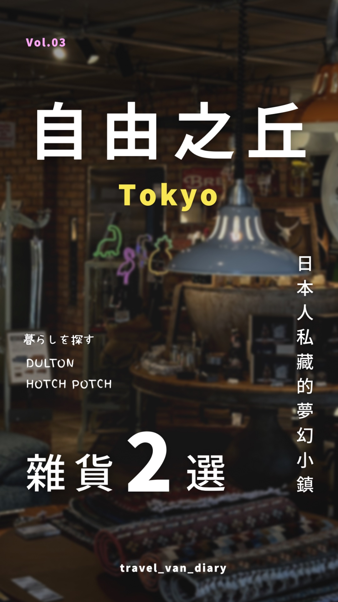
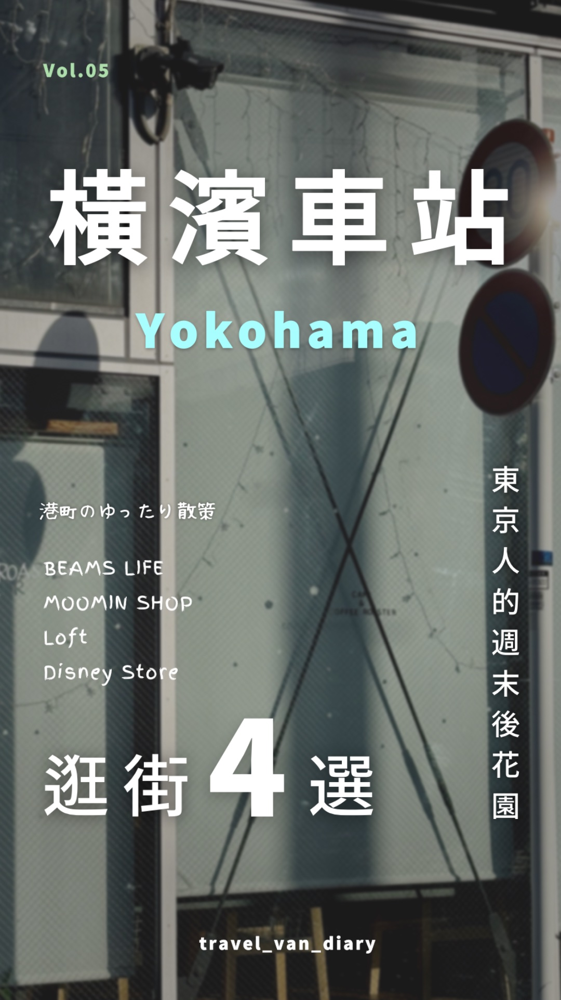
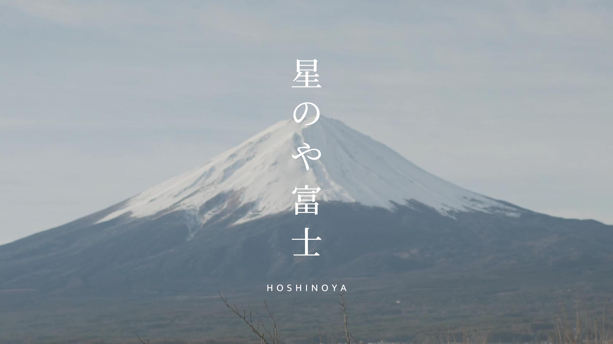

東京必扭 · 扭蛋 2 選
狗太太 × 袋鼠先生 · VIDEO EDITING PORTFOLIO
把日常，剪成
值得停留的故事。
有節奏的剪輯，有溫度的畫面。
從日本旅居日記到品牌內容，讓好故事被更多人看見。
TRAVEL · LIFESTYLE · PODCAST HIGHLIGHTS
STORIES MOVE
狗太太的攻略筆記 ＋ 袋鼠先生的生活靈感
企劃有邏輯✳剪輯有節奏✳成效有依據✳合作有默契
01 / WHY ME?
不只剪得好看，
也讓內容走得更遠。
自己拍、自己剪、自己經營。
用真實帳號累積經驗，讓創意與商業目標一起前進。
9 支已提供觀看數的 Reels
保留典型表現，不只看爆款
帳號洞察提供的近期數據
每一支作品，都留下成長的軌跡
觀看次數線性比例；資料截至 2026.09.11。平均數與中位數採資料包所列 9 支 Reels；POV 未提供確切發布日，非嚴格七月起完整樣本。
持續產出，持續優化
每週一支的
內容經營節奏
自 2026 年 7 月開始，以每週一支為發片目標，持續累積旅居與生活系列。
現有資料可確認持續發布，尚不足以驗證每週皆有上片。
讓觀看，變成互動
13.6%互動次數／瀏覽次數
3.4 萬 ÷ 25 萬
3.4 萬 ÷ 25 萬
+414 支具追蹤資料的影片
合計帶來新增追蹤
合計帶來新增追蹤
同期帳號彙總口徑。4 支影片追蹤／觸及加權比率約 0.056%；跨片觸及可能重複。缺少期初粉絲數，整體漲粉率待補。
PM → CREATOR
懂創意，也懂把專案好好交付。
前軟體接案公司 PM，具備全遠端工作經驗。從釐清需求、安排時程到整合回饋，以商業 × 創意思維陪你完成內容；善用 AI 加速發想與整理，延伸出懶人包、診斷工具等高附加價值資源。
02 / SELECTED WORKS
讓畫面說故事，
讓數字說成果。
點開影片，感受實際的剪輯節奏。
從吸睛開場、資訊重點到生活氛圍。
TOP VIEWED
01 · 玩具開箱 / 短影音
小小扭蛋，大大吸引力。
東京必扭 · 扭蛋 2 選
211,000觀看次數
Vol.04 觀看數；未提供該支完整互動明細。
TRAVEL PICKS
02 · 景點選物 / 旅遊攻略
把旅途，變成收藏清單。
橫濱紅磚倉庫 · 雜貨 2 選
12,000觀看次數
260分享200收藏+14追蹤
SLOW MOMENTS
03 · 生活日記 / 氛圍敘事
讓人想停留的日常片刻。
橫濱夕陽 · 散步 4 選
3,878觀看次數
51分享50收藏+7追蹤
不同內容，帶出不同互動。
互動率 =（讚＋留言＋轉發＋分享＋儲存）÷ 瀏覽人數
東京必扭第二彈9.51%
紅磚倉庫7.82%
橫濱散步7.51%
橫濱車站15.15%
逐片觸及口徑，與帳號 13.6% 指標分母不同；同一人可能進行多次互動。來源：IG 帳號儀表板（0911）。
03 / EDITING & COVER DESIGN
有自己的風格，
也能讀懂你的調性。
旅遊景點 · Podcast 精華剪輯 · 生活日記



Podcast 精華剪輯：協助整理觀點、聚焦金句與字幕重點，讓長內容成為短影音。此處先展示現有旅遊與生活作品，Podcast 範例待補。
MY EDITING TOOLKIT剪映 CapCutvivistickerLightroom 調色ClaudeChatGPT
04 / BEYOND THE EDIT
影片之外，
讓內容的價值繼續延伸。
05 / LET’S WORK TOGETHER
下一個好故事，
一起剪出來。
短影音 S
NT$600 起
30–60 秒
Reels / TikTok / Shorts
適合快速傳遞一個精彩重點。
短影音 M
NT$800 起
60–90 秒
Reels / TikTok / Shorts
讓資訊與故事有更多發揮空間。
精華剪輯
NT$1,200 起
90 秒以上，依需求討論
節目精華 / 情境質感影片
梳理長內容，保留精彩片刻。
基本方案包含：基本字幕、BGM、基本音效、簡易轉場／基本調色，以及 2 次細節修改。
封面設計 + NT$100 起懶人包 + NT$500 起影片診斷報告 + NT$300 起
合作流程與報價注意事項
討論需求 → 報價確認 → 開始剪輯 → 修改調整（含 2 次）→ 交付成品。
2026 Q3 參考價。其他方案與風格模仿依需求報價；實際費用依素材量、複雜度與需求評估。超過 2 次修改另計；初剪確認後大幅變更風格另行評估。交件前提供浮水印版，付款後提供無浮水印成品。24–48 小時急件需加價並先確認檔期；請提供素材原檔，額外整理素材另報價。
帶著你的素材，來聊聊吧。
告訴我們影片用途、參考風格、預計長度與交期。